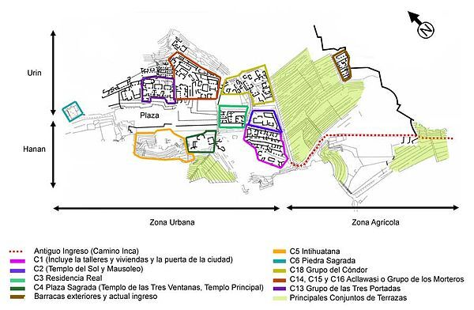

Zonas
El área edificada en Machu Picchu es de 530 metros de largo por 200 de ancho e incluye al menos 172 recintos.

El complejo está claramente dividido en tres grandes zonas: la zona agrícola, formada por conjuntos de terrazas de cultivo, que se encuentra al sur; la zona urbana, que es, por supuesto, aquella donde vivieron sus ocupantes y donde se desarrollaron las principales actividades civiles y religiosas; y la zona de cantera, que es la zona de donde extraian la piedra.